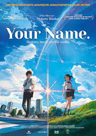
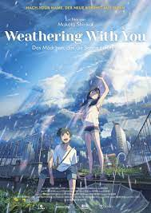
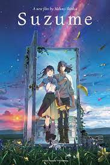
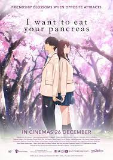

Some popular Anime Movies are
-
Your Name
creator:Makoto Shinkai
The movie follows the story of two teenagers, Taki and Mitsuha, who inexplicably start switching bodies. Taki lives in Tokyo and Mitsuha resides in a rural town called Itomori. As Taki and Mitsuha continue to swap bodies intermittently, they develop a unique bond through leaving notes, messages, and experiencing each other's lives. However, their connection becomes more complicated when they realize that they are not merely swapping bodies in time but are also separated by a significant time difference. Driven by a desire to meet in person, Taki and Mitsuha embark on a journey to uncover the truth behind their extraordinary connection and prevent a catastrophic event from occurring in Mitsuha's town.
"Your Name" explores themes of love, fate, and the profound impact of human connections. It is renowned for its stunning animation, breathtaking visuals, and an emotionally captivating storyline that tugs at the heartstrings of viewers
To watch Your Name follow the links
More about Demon Slayer click here
-
Weathering with You
creator:Makoto Shinkai
The movie tells the story of a high school student named Hodaka who runs away from his home on a rural island and moves to Tokyo. Upon arriving, he encounters a mysterious girl named Hina who has the ability to control the weather. As Hodaka and Hina become closer, they form a bond and start a business offering sunshine to people during rainy days using Hina's unique powers. However, they soon discover that using this power comes with a price and unforeseen consequences.
"Weathering with You" explores themes of love, sacrifice, and the connection between humans and nature. The film combines stunning animation with a heartfelt story that delves into the characters' struggles and emotions as they navigate their way through life's challenges.
To watch Weathering with You follow the links
More about Weathering with You click here
-
Suzume
creator:Makoto Shinkai
As the skies turn red and the planet trembles, Japan stands on the brink of disaster. However, a determined teenager named Suzume sets out on a mission to save her country. Able to see supernatural forces that others cannot, it's up to her to close the mysterious doors that are spreading chaos across the land. A perilous journey awaits as the fate of Japan rests on her shoulders.
To watch Suzume follow the links
More about Suzume click here
-
Demon Slayer: Kimetsu no Yaiba – The Movie: Mugen Train

creator: Haruo Sotozaki
"Demon Slayer: Kimetsu no Yaiba – The Movie: Mugen Train" is a Japanese animated film that follows the story of Tanjiro Kamado and his friends as they embark on a dangerous mission aboard the Mugen Train. They encounter the powerful demon Enmu and must battle him and his minions while confronting their own personal struggles. The movie features stunning animation, intense action, and emotional storytelling, serving as a crucial bridge between the first and second seasons of the anime series.
To watch Demon Slayer: Kimetsu no Yaiba – The Movie: Mugen Trainfollow the links
More about Demon Slayer: Kimetsu no Yaiba – The Movie: Mugen Train click here
-
I Want to Eat Your Pancreas
creator:Yoru Sumino
The story revolves around a high school student named Sakura, who is diagnosed with a terminal pancreatic illness. She decides to keep her condition a secret and befriends a classmate named Haruki, who accidentally discovers her secret diary. As they spend time together, they develop a deep and meaningful bond, learning about love, friendship, and the importance of cherishing every moment. The movie explores themes of life, mortality, and the power of human connection, leaving a lasting emotional impact on its viewers.
To watch I Want to Eat Your Pancreas follow the links
More about I Want to Eat Your Pancreas click here